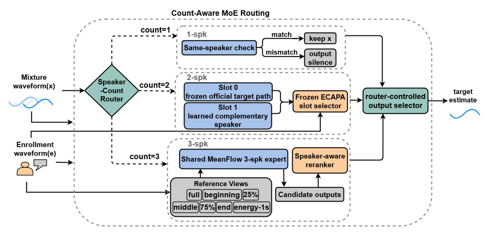
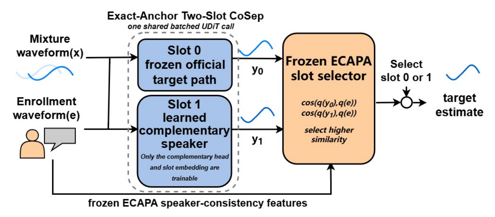
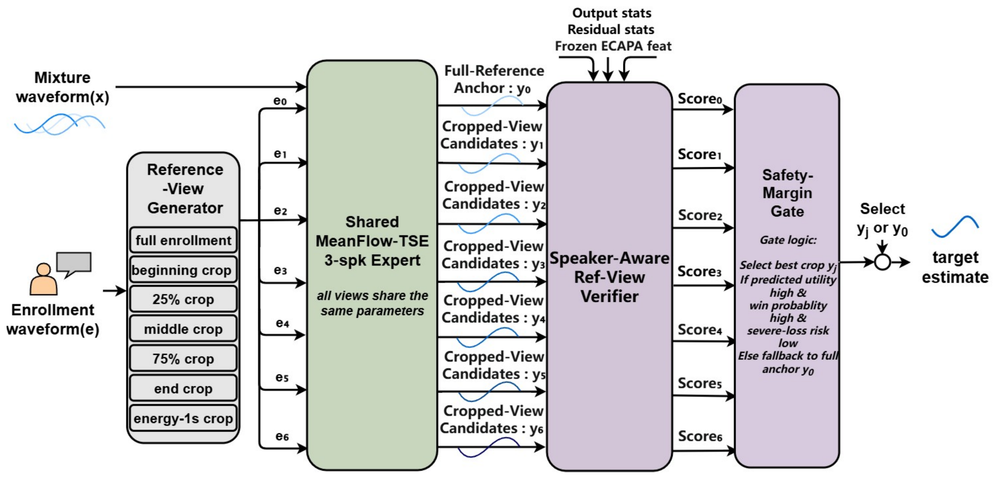

/
Target speaker extraction
SykiTSE-MoE
Count-aware target speaker extraction with Exact-Anchor Two-Slot CoSep and speaker-aware reference-view reranking.
- Clean input
- Input preserved
- 2 speakers
- 19.161 dB
- 3 speakers
- 13.779 dB
Paper
Abstract
Target speaker extraction (TSE) has reached strong performance on two-speaker mixtures, yet most systems are trained around one interferer. In real recordings, a target speaker can be accompanied by a varying number of background speakers, making one universal extractor insufficient. Mixed-count fine-tuning improves dense mixtures, but can reduce the original two-speaker ability instead of preserving it.
We introduce SykiTSE-MoE, a count-aware framework that separates speaker-count decisions from expert extraction and routes each input to a count-specific MeanFlow-TSE expert. For two speakers, Exact-Anchor Two-Slot CoSep preserves the complete official target path, learns the complementary speaker in a second slot, and selects between the jointly generated slots using frozen speaker similarity. For three speakers, a dedicated expert uses speaker-aware reference-view reranking because extraction quality can change with the chosen enrollment segment.
We evaluate the system on a comprehensive 1/2/3-speaker suite covering in-domain mixtures, unseen LibriSpeech mixtures, LibriMix360 validation, and Wall Street Journal (WSJ0) out-of-domain mixtures. SykiTSE-MoE improves fair mixed-count MeanFlow fine-tuning by 1.85 and 1.04 dB on the two- and three-speaker subsets; relative to MeanFlow original, the gains are 0.15 and 7.06 dB. Applying the same count-aware design to WeSep improves the two subsets over same-data fine-tuning by 0.49 and 1.64 dB, showing that the framework can transfer to another backbone.
Paper figures
Count-aware extraction
Click any figure to inspect the full-resolution version used in the current paper.



Listening experiments
Main results and ablations
Four comparisons with five curated examples each. Audio-card scores are SI-SDRi; case headers report final absolute SI-SDR.
Full evaluation suite
Quantitative results
Sample-weighted mean SI-SDRi in dB. Higher is better.
Main comparison
Count-specific results on the complete evaluation suite.
| System | 1-spk | 2-spk | 3-spk |
|---|---|---|---|
| Official WeSep | -64.507 | 16.534 | 6.454 |
| WeSep same-data FT | -60.619 | 16.369 | 10.374 |
| WeSep mixed-count FT | -35.369 | 15.978 | 9.736 |
| USEF-TSE original | -94.164 | 13.117 | 4.608 |
| USEF-TSE mixed-count FT | -82.949 | 13.972 | 10.184 |
| MeanFlow original | -50.877 | 19.015 | 6.719 |
| MeanFlow mixed-count FT | -48.491 | 17.312 | 12.735 |
| SykiTSE-MoE | Input preserved† | 19.161 | 13.779 |
| SykiTSE-MoE, WeSep backbone | Input preserved† | 16.854 | 12.010 |
† The one-speaker path returns the input waveform unchanged. Its SI-SDRi is therefore 0 dB by construction; "input preserved" describes the intended behavior more clearly than presenting zero as an extraction score.
Component ablation
Each expert-local refinement is added after count specialization.
| Path | Mixed-count FT | Count expert | + local selection |
|---|---|---|---|
| 2 speakers / Two-slot | 17.312 | 19.015 | 19.161 |
| 3 speakers / Reference views | 12.735 | 13.662 | 13.779 |